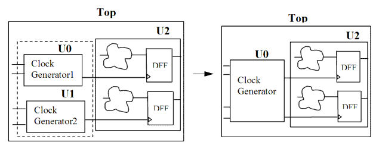

| Description | Clock generation logic should be put in a particular module. This rule fires when Leda detects clock generation logic that is not in the same module. Putting all the clock generation logic in one module allows you to easily observe and control the clock signals.Arguments:
%s1 is the generated clock. Source Position: The position is the line in which the clock is defined. |
| Policy | DESIGN |
| Ruleset | PARTITIONING |
| Language | VHDL/Verilog |
| Type | Hardware |
| Severity | Error |
Here are examples of invalid and Verilog code, followed by circuit diagrams that illustrates the problem and the solution:
// Invalid example module ntl_par19_top ; ... wire Clk_gen1, Clk_gen2; //generated clocks ... Clk_gen1 U0 (Clock, Reset, Clk_gen1); Clk_gen2 U1 (Clock, Reset, Clk_gen2); // NTL_PAR19 fires -- clock generation logic should be put in a // particular module Design_core U2(Clock_gen1, Clock_gen2, Reset, Din, Dout); endmodule // Valid example module ntl_par19_top ; ... wire Clk_gen1, Clk_gen2; //generated clocks ... Clk_gen U0 (Clock, Reset, Clk_gen1,Clk_gen2); // OK -- one module Design_core U1(Clock_gen1, Clock_gen2, Reset, Din, Dout); endmoduleSample Output
17: output Clkout; ^ 9000061299.v:17: PARTITIONING> [ERROR] NTL_PAR19: Clock generation logic should be put in a particular module top.U0.Clkout --- Other clock top.U1.Clkout is generated in the instance: top.U1 (file: 9000061299.v, line: 21)
In the above sample output,
Secondary Message
Other clock %s2 is generated in the instance %s3.
Argument
%s2 is the other generated clock.%s3 is the instance. Clock %s2 is generated in %s3.
Source Position
The position is the line in which the instance is defined.
Schematics in Path Viewer
No.
